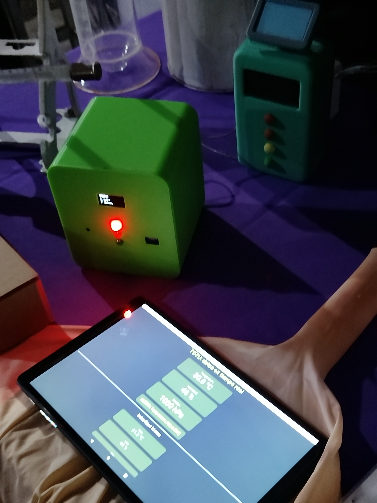
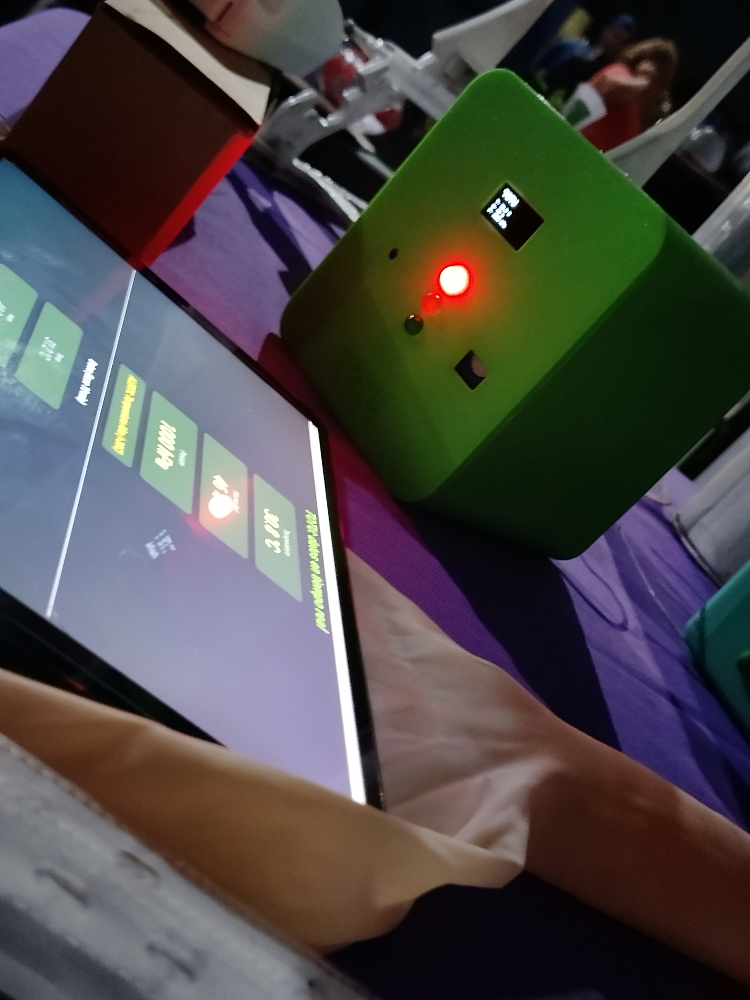
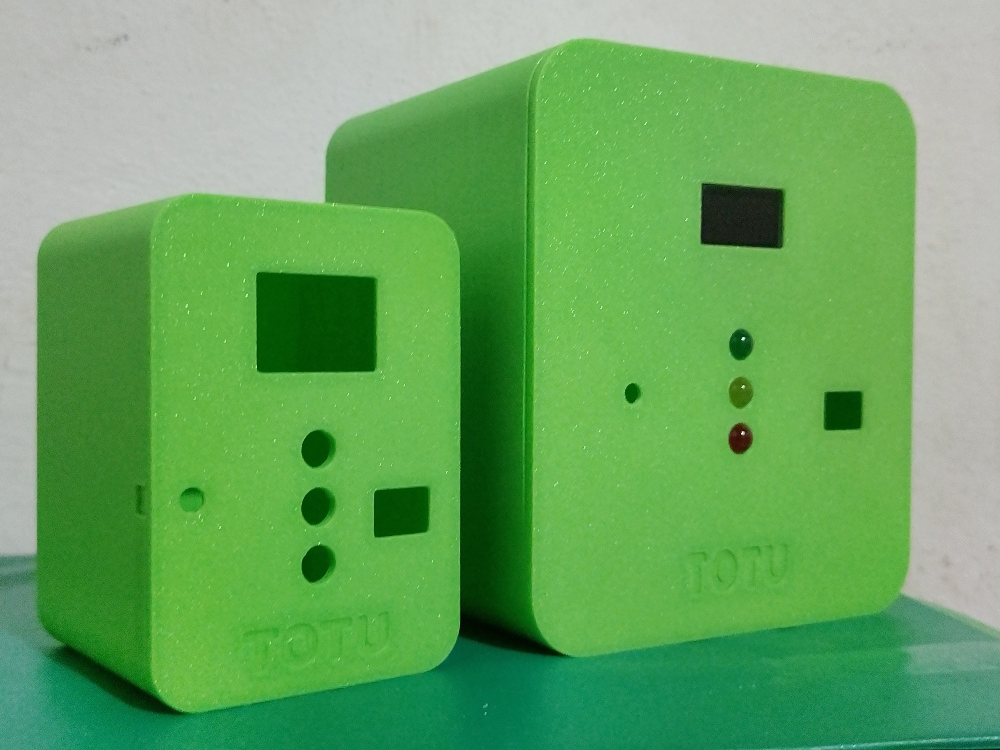

Nuestra Historia
El camino de TOTU desde una idea hasta una solución real para comunidades del Chaco

Franco Gómez
Estudiante de la Tecnicatura Superior en Meteorología - ITESA "Jorge A. Newbery"
Todo comenzó en un aula del Chaco, con la idea de que la tecnología meteorológica no debería ser un privilegio. Quería que mi abuela, que no ve bien, pudiera saber si venía lluvia. Quería que mis vecinos qom supieran si el día de mañana iba a ser bueno para sembrar. Así nació TOTU: un tótem hecho con botellas recicladas, que habla, que escribe en braille, y que anuncia el tiempo en las lenguas de nuestra tierra.
La idea
Primeras maquetas en cartón y pruebas con sensores básicos en el taller de la escuela.


Desarrollo
Meses de pruebas, fallos y aprendizajes. Soldando sensores, programando el firmware y perfeccionando el sistema Braille.
Emprende U Córdoba 2025
Presentación del proyecto en la Universidad Nacional de Córdoba, compitiendo con emprendedores de todo el país.

Innpulsate Santa Fe 2025
Llevando TOTU a nuevas provincias. Networking con mentores, inversionistas y otros emprendedores tecnológicos.
Hoy
TOTU sigue creciendo. Buscando llegar a cada rincón del Chaco y el NEA. Cada botella reciclada es un paso más cerca.

Galería
Momentos que marcaron el camino de TOTU


.jpg)